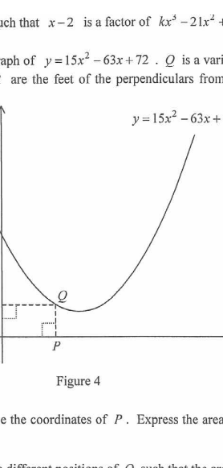

Functions and Graphs — Factor Theorem & Optimisation of a Rectangle Area
(a) Find the value of \(k\) such that \(x-2\) is a factor of \(kx^{3}-21x^{2}+24x-4\). 2 marks
(b) Figure 4 shows the graph of \(y=15x^{2}-63x+72\). \(Q\) is a variable point on the graph in the first quadrant. \(P\) and \(R\) are the feet of the perpendiculars from \(Q\) to the \(x\)-axis and the \(y\)-axis respectively.
(i) Let \((m,0)\) be the coordinates of \(P\). Express the area of the rectangle \(OPQR\) in terms of \(m\).
(ii) Are there three different positions of \(Q\) such that the area of the rectangle \(OPQR\) is \(12\)? Explain your answer. 5 marks
